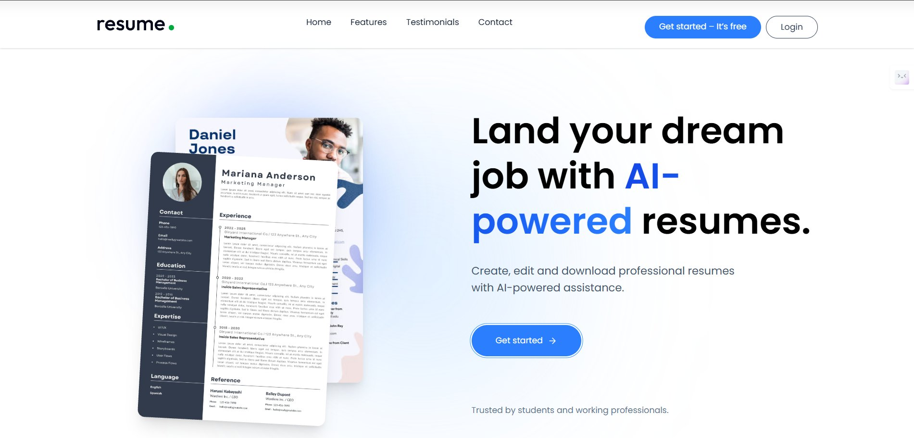
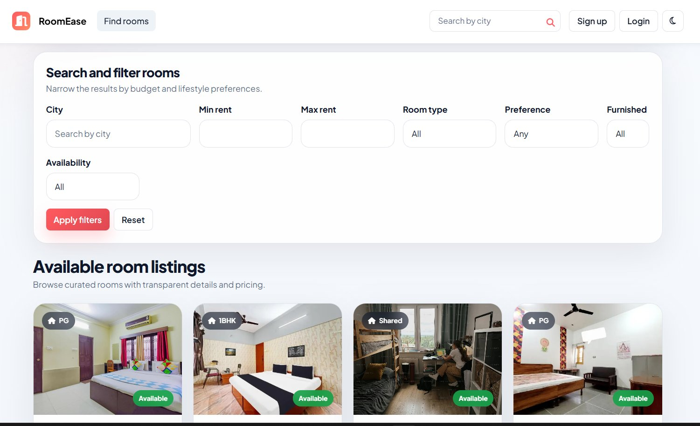
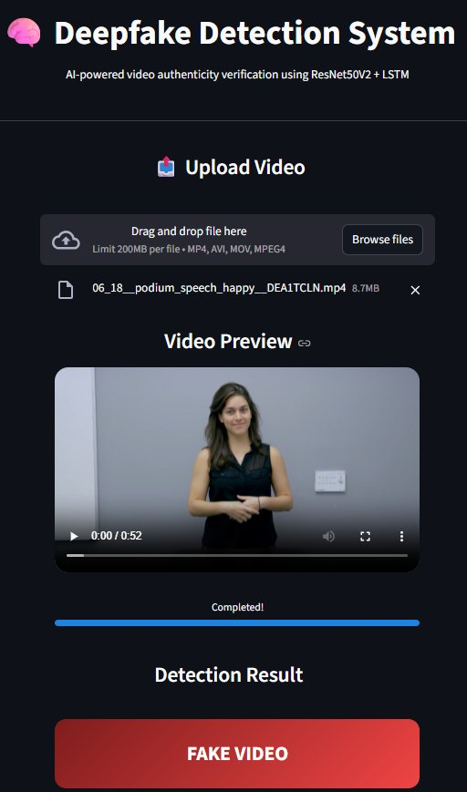

Primary focus
Java Backend
JavaSpring BootSpring Data JPASpring SecuritySpring AIREST APIs
Open to Java backend opportunities
Hi, I'm
I build backend applications and REST APIs with Java and Spring Boot, and develop AI-powered features through LLM integration. I also work with frontend technologies, databases, and cloud deployment to bring applications from code to production.
class Developer {
String focus = "Backend";
String stack = "Java + Spring";
boolean learning = true;
}01 / About
I develop backend applications with Java and Spring Boot, focusing on REST APIs, object-oriented design, database integration, and secure, maintainable services.
Alongside backend development, I work with React, HTML, CSS, and JavaScript, and use Docker and cloud platforms to deploy applications. I also integrate large language models (LLMs) into applications to build practical AI-assisted features.
Based in Pune, Maharashtra · Open to opportunities across India
02 / Toolkit
My focus is Java and backend engineering, supported by practical full-stack and deployment experience.
Primary focus
Data
Supporting skills
Build & deploy
Foundations
03 / Selected work
A mix of backend engineering, full-stack applications, deployment, and academic exploration.
01 · Backend / AI
An AI-powered GitHub repository assistant that lets developers explore a codebase with natural-language questions. Combines a Spring Boot backend, GitHub OAuth, Gemini, and vector search with PostgreSQL/pgvector.

02 · Full stack / Cloud
A resume-building application with editable templates, AI-assisted content improvements, PDF export, and shareable resumes. Containerized and deployed with a CI/CD workflow.

03 · Full stack
A room-rental platform with owner and tenant roles, listing search and filters, wishlists, inquiries, and reviews.

04 · Academic / Machine learning
An academic video-authenticity project using ResNet50V2 for spatial feature extraction and LSTM to learn temporal patterns across video frames.
05 · Core Java
A console-based banking program for account operations, deposits, withdrawals, and balance checks, built to practise OOP concepts.
04 / Experience
Remote
05 / Education
Bharati Vidyapeeth College of Engineering · Navi Mumbai
06 / Contact
I'm interested in junior Java backend and Spring Boot opportunities, and I'm always happy to connect with other developers.